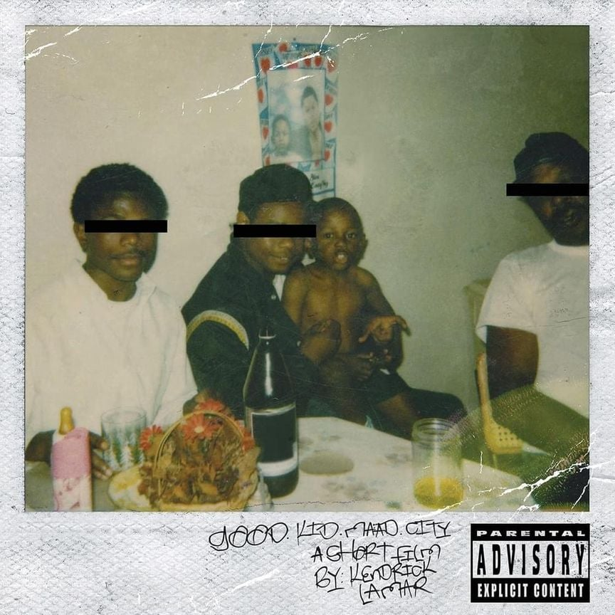

Money Trees pertenece al album good kid, m.A.A.d city
Fue lanzada el 22 de octubre de 2012

Money Trees pertenece al album good kid, m.A.A.d city
Fue lanzada el 22 de octubre de 2012
"Money Trees" es una canción de Kendrick Lamar, con Jay Rock, que detalla
sus luchas por crecer en un área de bajos ingresos. A través de imágenes vívidas
y juegos de palabras ingeniosos, la canción pinta un cuadro vívido de la pobreza,
el crimen y la desesperación que existe en una comunidad de bajos ingresos.
La canción también expresa una profunda admiración por el ajetreo y el empuje de
quienes viven en la ciudad, destacando su determinación de triunfar y mejorar su vida.